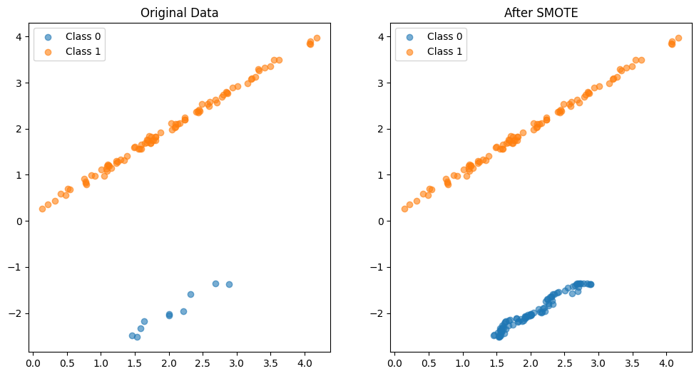

Chapter 2.2 — SMOTE: Synthetic Minority Over-sampling Technique#
SMOTE generates new minority-class samples by interpolating between an existing minority record xᵢ and one of its k-nearest neighbours x_zi:
x_new = xᵢ + λ · (x_zi − xᵢ), λ ∈ [0, 1]
This produces samples that lie on the line segment between real minority points, covering the feature space more densely than naive duplication.
When to use this approach:
The dataset has meaningful class imbalance (minority < 30% of records).
The feature space is low-to-moderate dimensional (SMOTE degrades in very high dimensions).
You want to reduce overfitting compared to naive duplication.
Variants covered: The imblearn library used here also provides BorderlineSMOTE, ADASYN, SVM-SMOTE, and KMeansSMOTE for more targeted oversampling.
Setup — Create an Imbalanced Dataset#
We use sklearn.make_classification to generate a two-class problem with a 10%/90% minority/majority split.
import numpy as np
import pandas as pd
from sklearn.datasets import make_classification
from imblearn.over_sampling import SMOTE
import matplotlib.pyplot as plt
---------------------------------------------------------------------------
ImportError Traceback (most recent call last)
/tmp/ipykernel_20583/481349399.py in <module>
2 import pandas as pd
3 from sklearn.datasets import make_classification
----> 4 from imblearn.over_sampling import SMOTE
5 import matplotlib.pyplot as plt
~/anaconda3/lib/python3.9/site-packages/imblearn/__init__.py in <module>
50 # process, as it may not be compiled yet
51 else:
---> 52 from . import (
53 combine,
54 ensemble,
~/anaconda3/lib/python3.9/site-packages/imblearn/combine/__init__.py in <module>
3 """
4
----> 5 from ._smote_enn import SMOTEENN
6 from ._smote_tomek import SMOTETomek
7
~/anaconda3/lib/python3.9/site-packages/imblearn/combine/_smote_enn.py in <module>
10 from sklearn.utils import check_X_y
11
---> 12 from ..base import BaseSampler
13 from ..over_sampling import SMOTE
14 from ..over_sampling.base import BaseOverSampler
~/anaconda3/lib/python3.9/site-packages/imblearn/base.py in <module>
19
20 from .utils import check_sampling_strategy, check_target_type
---> 21 from .utils._param_validation import validate_parameter_constraints
22 from .utils._validation import ArraysTransformer
23
~/anaconda3/lib/python3.9/site-packages/imblearn/utils/_param_validation.py in <module>
906 from sklearn.utils._param_validation import generate_valid_param # noqa
907 from sklearn.utils._param_validation import validate_parameter_constraints # noqa
--> 908 from sklearn.utils._param_validation import (
909 HasMethods,
910 Hidden,
ImportError: cannot import name '_MissingValues' from 'sklearn.utils._param_validation' (/home/junior/anaconda3/lib/python3.9/site-packages/sklearn/utils/_param_validation.py)
# Create a synthetic dataset
X, y = make_classification(
n_classes=2,
class_sep=2,
weights=[0.1, 0.9],
n_informative=2, # Changed from 3 to 2 to match n_features
n_redundant=0,
flip_y=0,
n_features=2, # Total features remains the same
n_clusters_per_class=1,
n_samples=100,
random_state=42
)
# Convert to DataFrame for easier manipulation
df = pd.DataFrame(X, columns=['Feature1', 'Feature2'])
df['Target'] = y
Class Distribution Before Oversampling#
# Count of each class before SMOTE
print("Before SMOTE:")
print(df['Target'].value_counts())
Before SMOTE:
1 90
0 10
Name: Target, dtype: int64
Apply SMOTE#
# Apply SMOTE
sm = SMOTE(random_state=42)
X_res, y_res = sm.fit_resample(X, y)
Exception ignored on calling ctypes callback function: <function _ThreadpoolInfo._find_modules_with_dl_iterate_phdr.<locals>.match_module_callback at 0x7f4a701aaca0>
Traceback (most recent call last):
File "/home/junior/anaconda3/lib/python3.9/site-packages/threadpoolctl.py", line 400, in match_module_callback
def switch_backend(self, backend):
File "/home/junior/anaconda3/lib/python3.9/site-packages/threadpoolctl.py", line 515, in _make_module_from_path
# Controllers for the libraries that we'll look for in the loaded libraries.
File "/home/junior/anaconda3/lib/python3.9/site-packages/threadpoolctl.py", line 606, in __init__
"""Return an instance of this class that can be used as a decorator"""
File "/home/junior/anaconda3/lib/python3.9/site-packages/threadpoolctl.py", line 646, in get_version
num_threads[user_api] = limit
AttributeError: 'NoneType' object has no attribute 'split'
Class Distribution After SMOTE#
# Count of each class after SMOTE
print("\nAfter SMOTE:")
print(pd.Series(y_res).value_counts())
After SMOTE:
1 90
0 90
dtype: int64
Visual Comparison#
The scatter plots show the original imbalanced data alongside the SMOTE-balanced version. Note how SMOTE fills the minority-class region rather than simply duplicating existing points.
# Plotting
fig, ax = plt.subplots(1, 2, figsize=(12, 6))
ax[0].scatter(X[y == 0][:, 0], X[y == 0][:, 1], label='Class 0', alpha=0.6)
ax[0].scatter(X[y == 1][:, 0], X[y == 1][:, 1], label='Class 1', alpha=0.6)
ax[0].set_title('Original Data')
ax[0].legend()
ax[1].scatter(X_res[y_res == 0][:, 0], X_res[y_res == 0][:, 1], label='Class 0', alpha=0.6)
ax[1].scatter(X_res[y_res == 1][:, 0], X_res[y_res == 1][:, 1], label='Class 1', alpha=0.6)
ax[1].set_title('After SMOTE')
ax[1].legend()
<matplotlib.legend.Legend at 0x7f4a0c1a3190>

Summary#
Method |
New samples |
Overfitting risk |
High-dim suitability |
|---|---|---|---|
Naive oversampling |
Exact duplicates |
High |
Good |
SMOTE |
Interpolated |
Lower |
Moderate |
For production use, always evaluate classifier performance with cross-validation applied after oversampling (to avoid data leakage from duplicated minority samples).